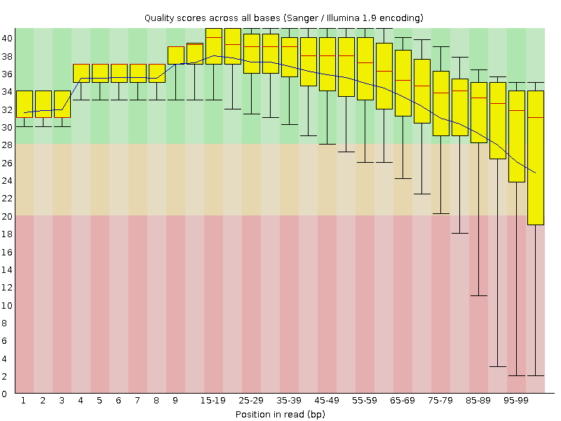
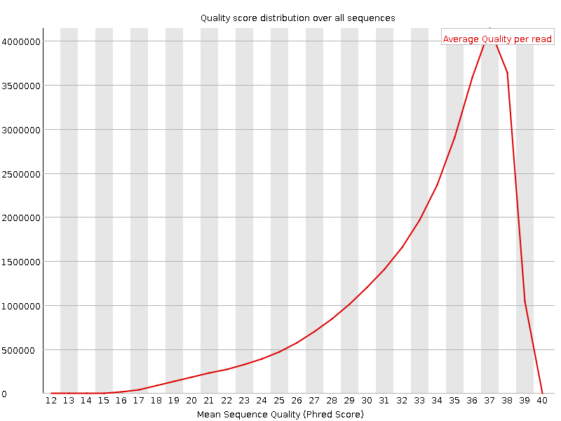
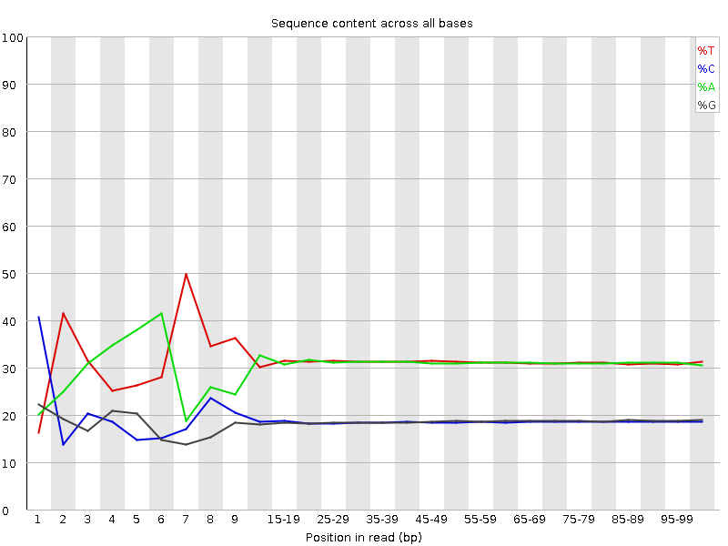
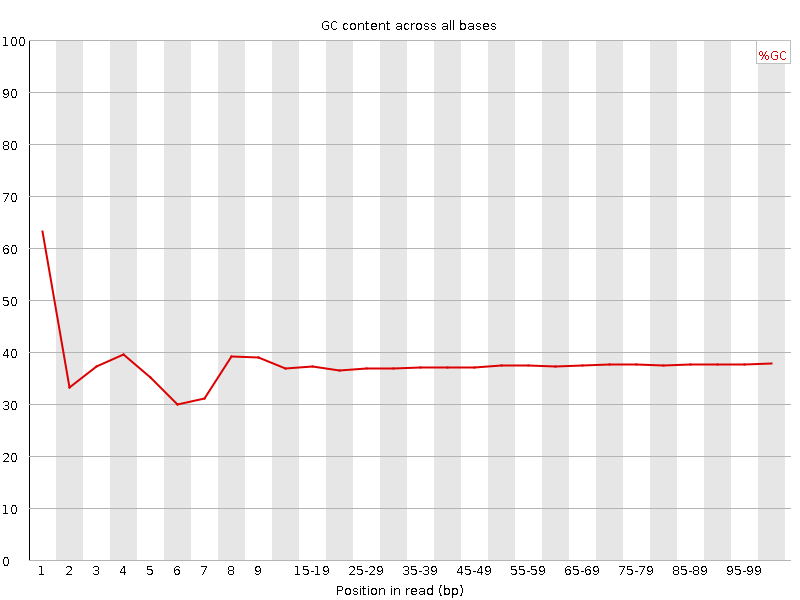
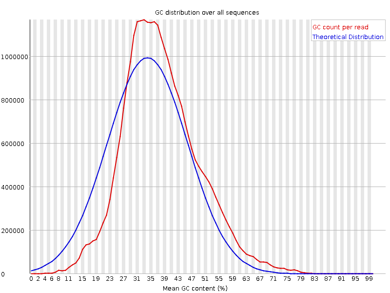
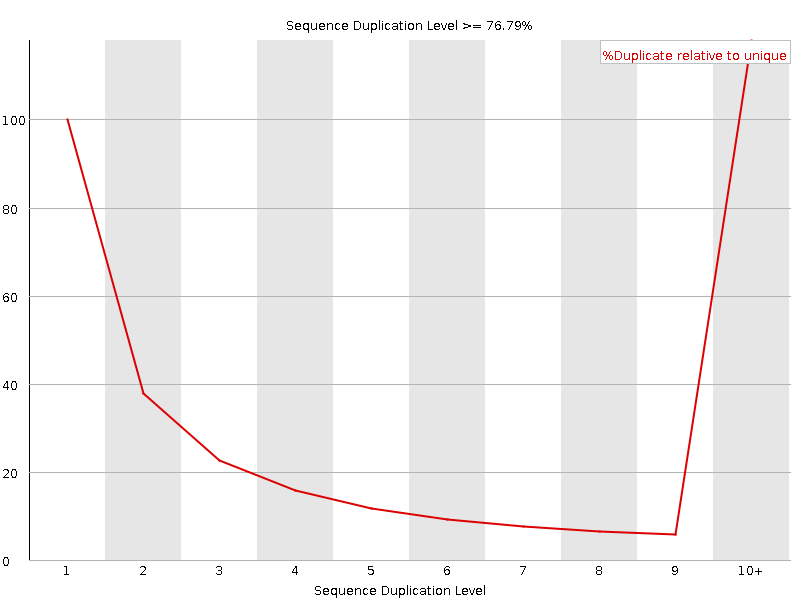
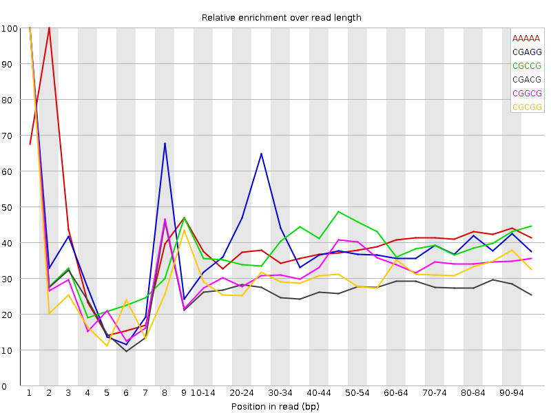

![[OK]](Icons/tick.png) Basic Statistics
Basic Statistics
| Measure | Value |
|---|---|
| Filename | t3_1.fq |
| File type | Conventional base calls |
| Encoding | Sanger / Illumina 1.9 |
| Total Sequences | 29284924 |
| Filtered Sequences | 0 |
| Sequence length | 100 |
| %GC | 37 |
Per base sequence quality

Per sequence quality scores

![[FAIL]](Icons/error.png) Per base sequence content
Per base sequence content

Per base GC content

![[WARN]](Icons/warning.png) Per sequence GC content
Per sequence GC content

Per base N content

Sequence Length Distribution

Sequence Duplication Levels

Overrepresented sequences
| Sequence | Count | Percentage | Possible Source |
|---|---|---|---|
| CTAATTTTCATCTTAATTCAACATCGAGGTCGCAAACATCTTTATCTATA | 65539 | 0.22379774658114188 | No Hit |
| CTTTCGTACAATTAATTAATATTTTATTATAGATAGAAACCAATCTGACT | 55366 | 0.1890597359924854 | No Hit |
Kmer Content

| Sequence | Count | Obs/Exp Overall | Obs/Exp Max | Max Obs/Exp Position |
|---|---|---|---|---|
| AAAAA | 17945390 | 2.1845114 | 5.5814047 | 2 |
| CGAGG | 2277025 | 2.1144366 | 5.357227 | 1 |
| CGCCG | 1342815 | 2.044056 | 5.182177 | 1 |
| CGACG | 2065220 | 1.9027835 | 6.8553877 | 1 |
| CGGCG | 1196785 | 1.8361006 | 5.524247 | 1 |
| CGCGG | 1160700 | 1.7807392 | 5.7842894 | 1 |
| TCGAG | 3129580 | 1.7333953 | 5.097801 | 7 |
| CTCGA | 3085535 | 1.695658 | 8.029168 | 1 |
| CTGGA | 2980035 | 1.6505661 | 6.8062077 | 1 |
| CGCGA | 1699890 | 1.566188 | 5.8361044 | 1 |
| CCGGC | 1023705 | 1.5583013 | 5.8553476 | 1 |
| CGAGA | 2748835 | 1.5329156 | 5.116514 | 1 |
| CGCCA | 1675595 | 1.5317516 | 5.3046327 | 1 |
| ATCGA | 4567185 | 1.5191578 | 5.338 | 6 |
| CTCCA | 2784055 | 1.5180352 | 5.449142 | 1 |
| CTTTT | 7496600 | 1.4671936 | 5.275664 | 1 |
| GTCGA | 2624610 | 1.4537051 | 5.0472097 | 1 |
| CTTTC | 4367390 | 1.4218591 | 6.0469017 | 1 |
| CTGGC | 1552395 | 1.4205854 | 5.08599 | 1 |
| GATCC | 2555200 | 1.404212 | 5.0999446 | 5 |
| CTTCG | 2571015 | 1.4033127 | 5.2078557 | 1 |
| CTCGT | 2539335 | 1.386021 | 6.4391227 | 1 |
| CTCGG | 1513735 | 1.3852079 | 7.297901 | 1 |
| CTCGC | 1497895 | 1.3600118 | 5.711565 | 1 |
| CTTGG | 2221820 | 1.2222568 | 5.282643 | 1 |
| CGAAA | 3615025 | 1.2106638 | 5.0533214 | 1 |
| GAATC | 3576425 | 1.1896065 | 5.275703 | 4 |